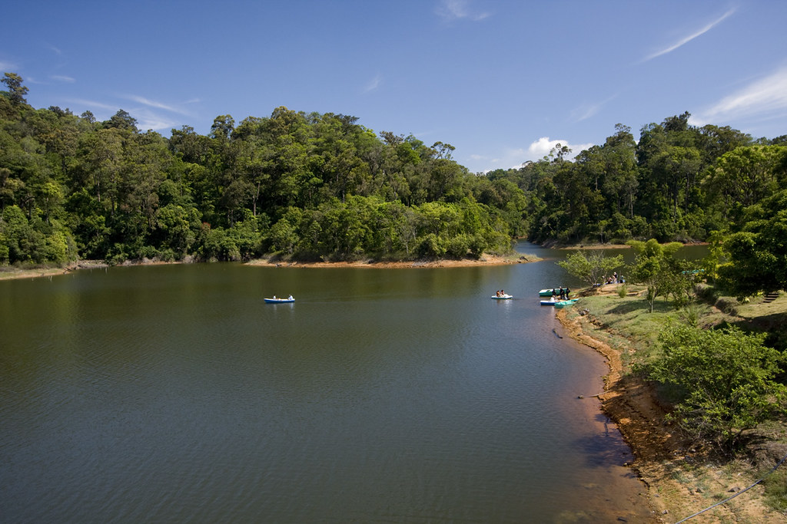

Pathanamthitta district is known as the 'Headquarters of Pilgrimage Tourism', of the Kerala State. Situated near the Western Ghats and bordered by the hills, Pathanamthitta district is a treat to eyes with its vast unending stretches of forests, rivers and rural landscapes. Blessed by nature, the district is famous for its scenic beauty, fairs and festivals.